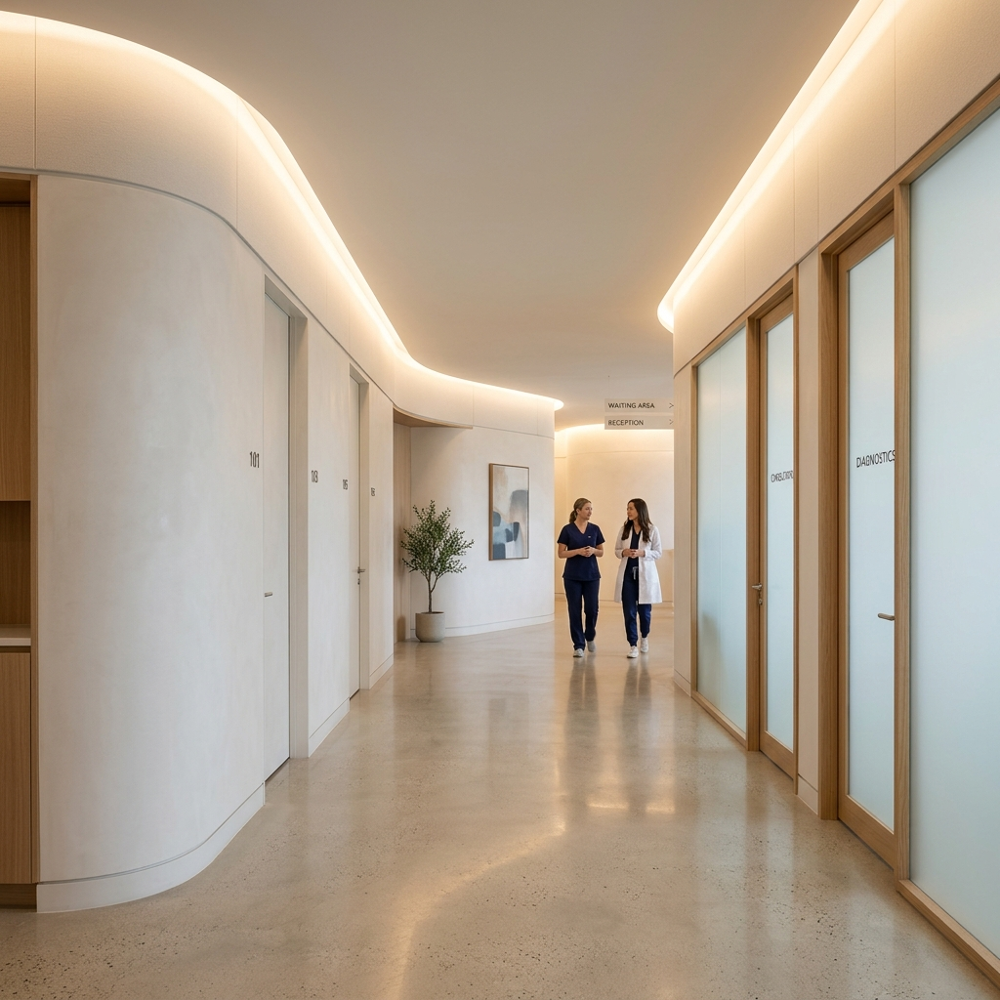
성공적인 메디컬 개원을 위한 진료과목별 맞춤 동선 설계 기획
내과, 치과, 이비인후과 등 각 진료과목의 특성에 맞춘 환자 및 의료진 동선 기획은 병원 운영의 효율성과 직결됩니다. 환자의 심리적 부담을 덜고 직원의 이동을 최소화하는 비법을 공개합니다.
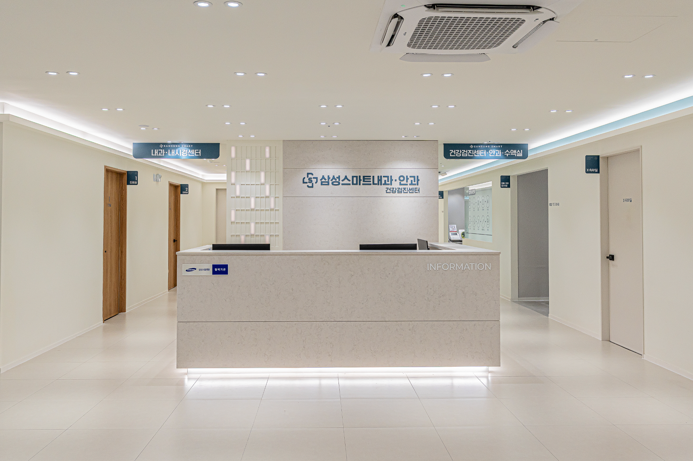
내과, 외과, 안과, 피부과, 성형외과까지, 각 진료과목의 특성과 의료법을 완벽히 이해한 맞춤형 인테리어를 선보입니다. 실내건축공사업 면허를 보유한 검증된 전문성과 감각으로, 환자와 의료진 모두에게 신뢰감을 주는 품격 있는 병원 공간을 완성합니다.
메디컬 인테리어는 미학적 만족을 넘어 고도의 기능적 결합이 요구됩니다. 동선 한 걸음의 차이가 진료 효율을 극대화하고 환자의 신뢰를 좌우합니다.
각 진료과목별 필수 면적 기준, 소방 대피로, 방사선 차폐 벽체 및 전용 음압/양압 설비를 완벽하게 준수하여 안정적인 준공 승인을 지향하며 꼼꼼하게 설계합니다.
눈부심을 억제한 간접 광원 설계 및 따뜻한 패브릭 질감으로 치료 전 환자가 느낄 수 있는 심리적 압박감을 최소화합니다.
실내건축공사업 면허 기반의 하자보증증권 발행을 필두로, 준공 후 신속한 AS 전담대응팀을 운영하여 사후 관리에 최선을 다합니다.
단순히 미적인 부분만 강조하는 인테리어가 아닌, 법률 검토와 마감 기술력의 확실한 기준 차이를 보여드립니다.
| 구분 | 일반 인테리어 업체 | 실내건축공업 면허 시공 |
|---|---|---|
| 면허 보유 여부 | 1,500만 원 이상 무등록 위법 시공 우려 | 실내건축공사업 면허 공식 등록 |
| 메디컬 공간 설계 | 소방, 공조 및 납차폐 기준 이해 부족 | 보건소 실사 기준 밀착 대응 설계 |
| 사용 자재 | 친환경 등급 미달 자재 혼용 위험 | 친환경 마감재 및 천연 목재/석재 적용 |
| 준공 후 AS | 보증서 미발행 및 연락 지연/부실 대응 | 하자이행보증증권 100% 발행 약속 |
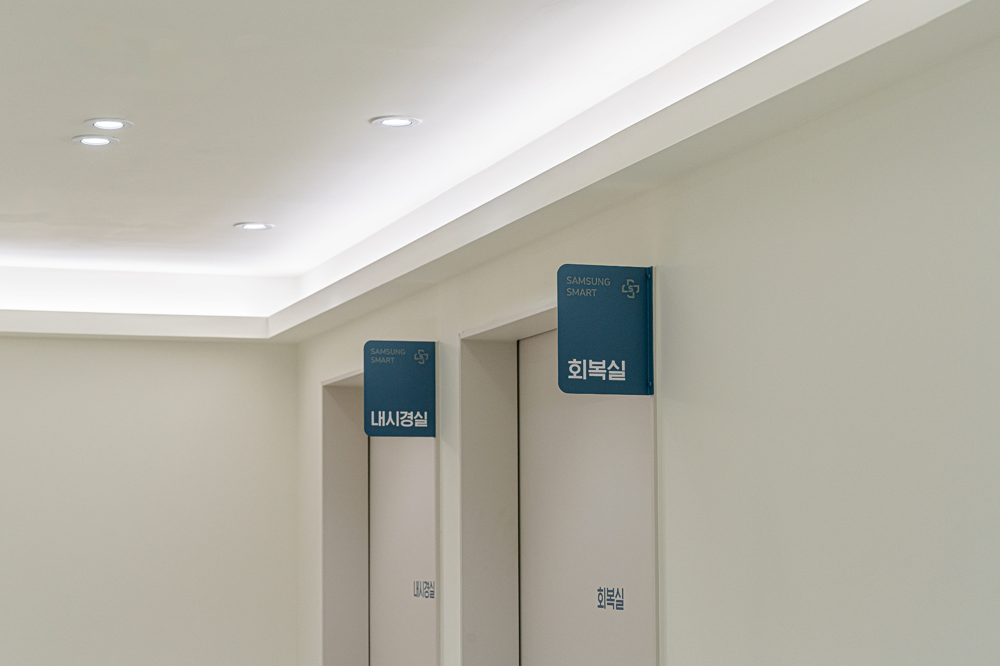
Reception
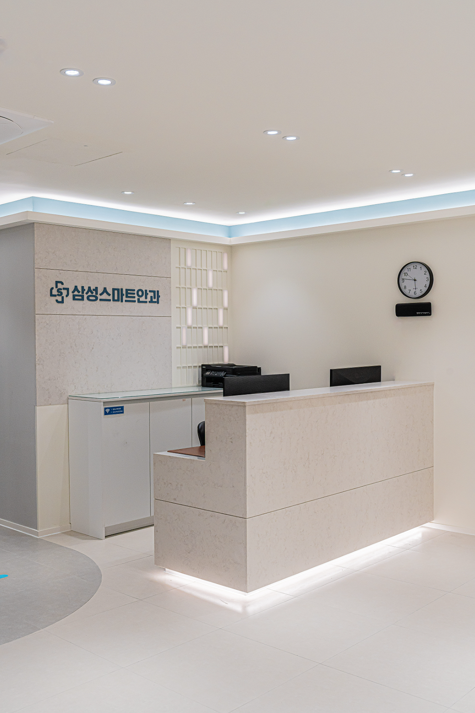
Lounge
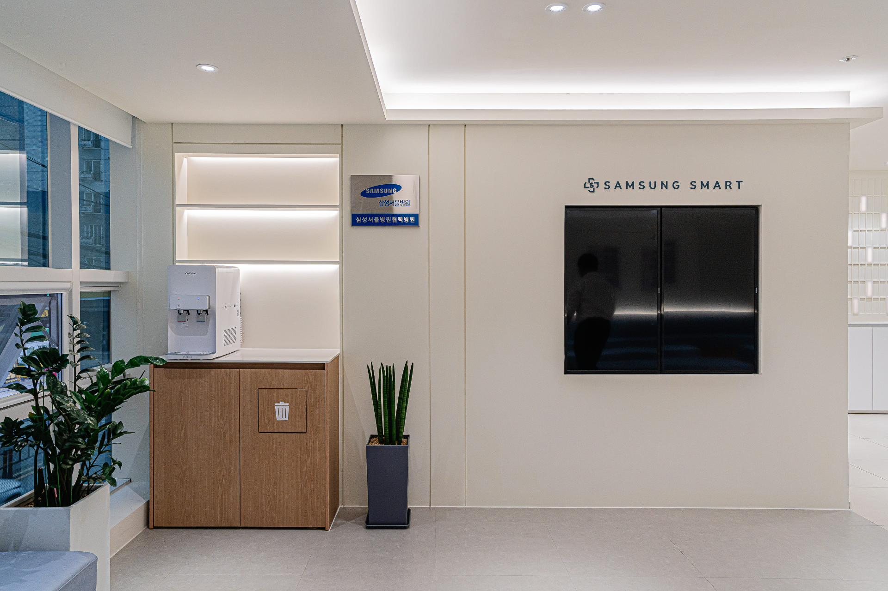
Diagnostics
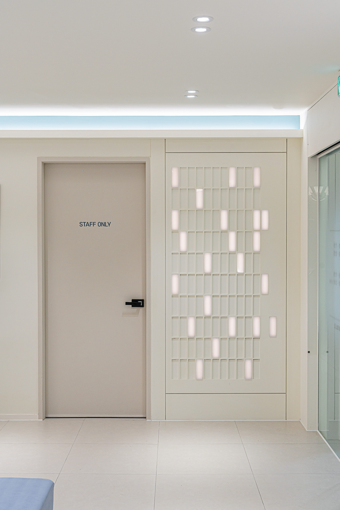
Corridor
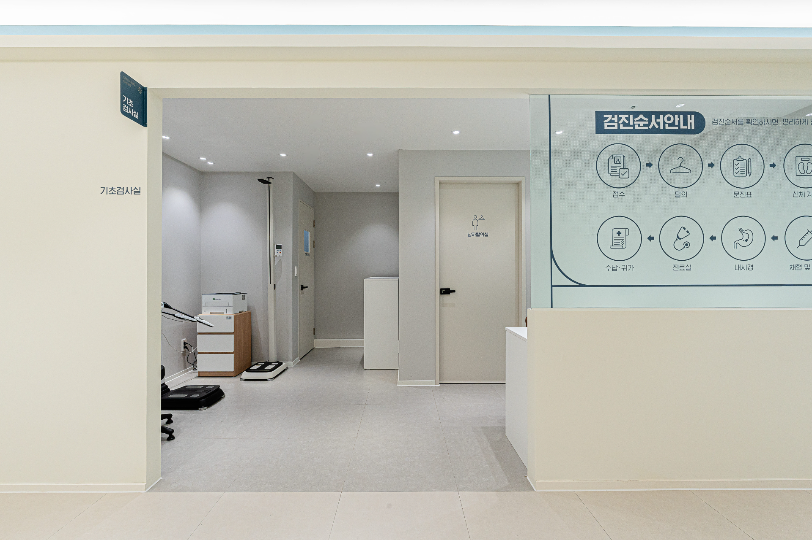
Examination Room
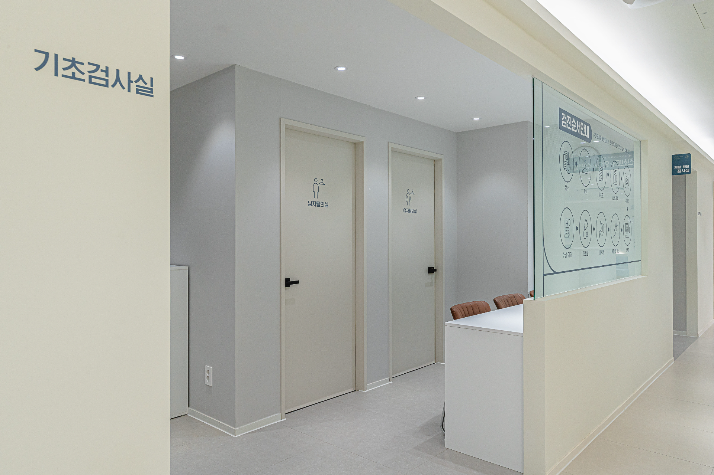
Optometry Room
상가, 사무실, 병원 창업 전에 평수, 자재, 필수 체크리스트와 계약서 특약을 마우스 몇 번으로 손쉽게 진단해보세요.
도면상 가로/세로 길이를 입력하시거나, 제곱미터(㎡)와 평수를 간편하게 변환해보세요.
성공적인 병원 개원을 위해 국가 인증 실내건축공업 면허 보유 전문가가 집필한 핵심 정보를 투명하게 공유합니다.

내과, 치과, 이비인후과 등 각 진료과목의 특성에 맞춘 환자 및 의료진 동선 기획은 병원 운영의 효율성과 직결됩니다. 환자의 심리적 부담을 덜고 직원의 이동을 최소화하는 비법을 공개합니다.
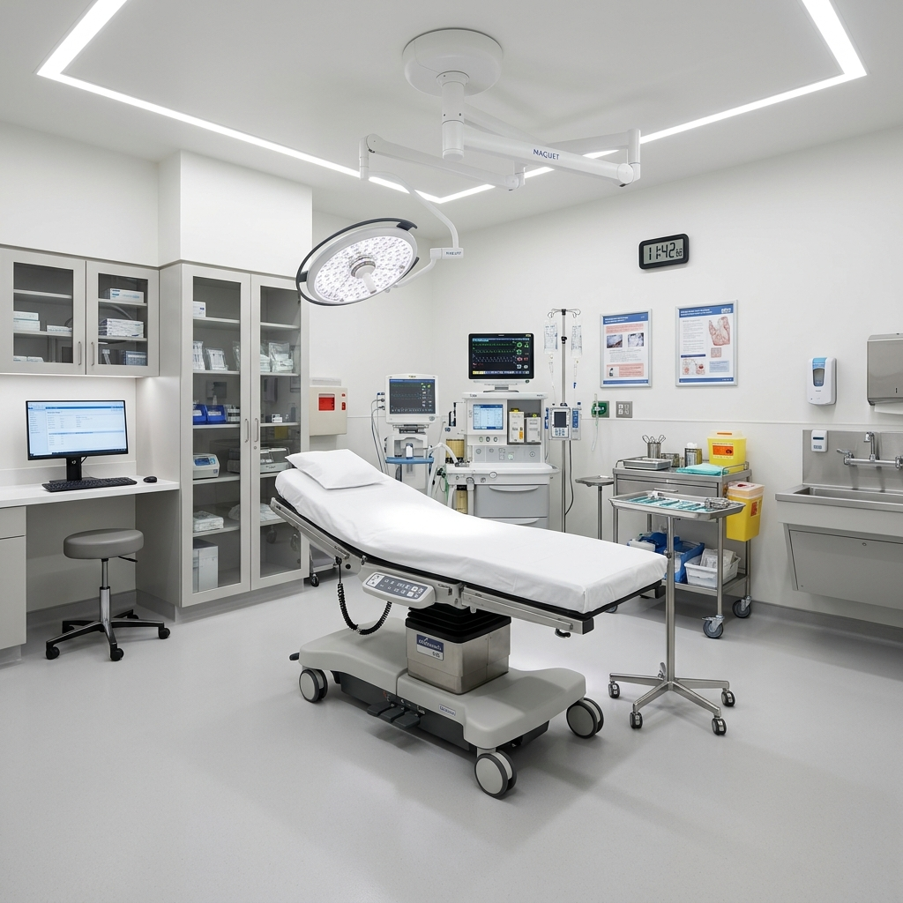
병원 인테리어에서 가장 까다로운 소방, 공조 및 방사선 차폐 설비의 기준을 명확히 제시하고 시공 시 주의해야 할 점을 알아봅니다.
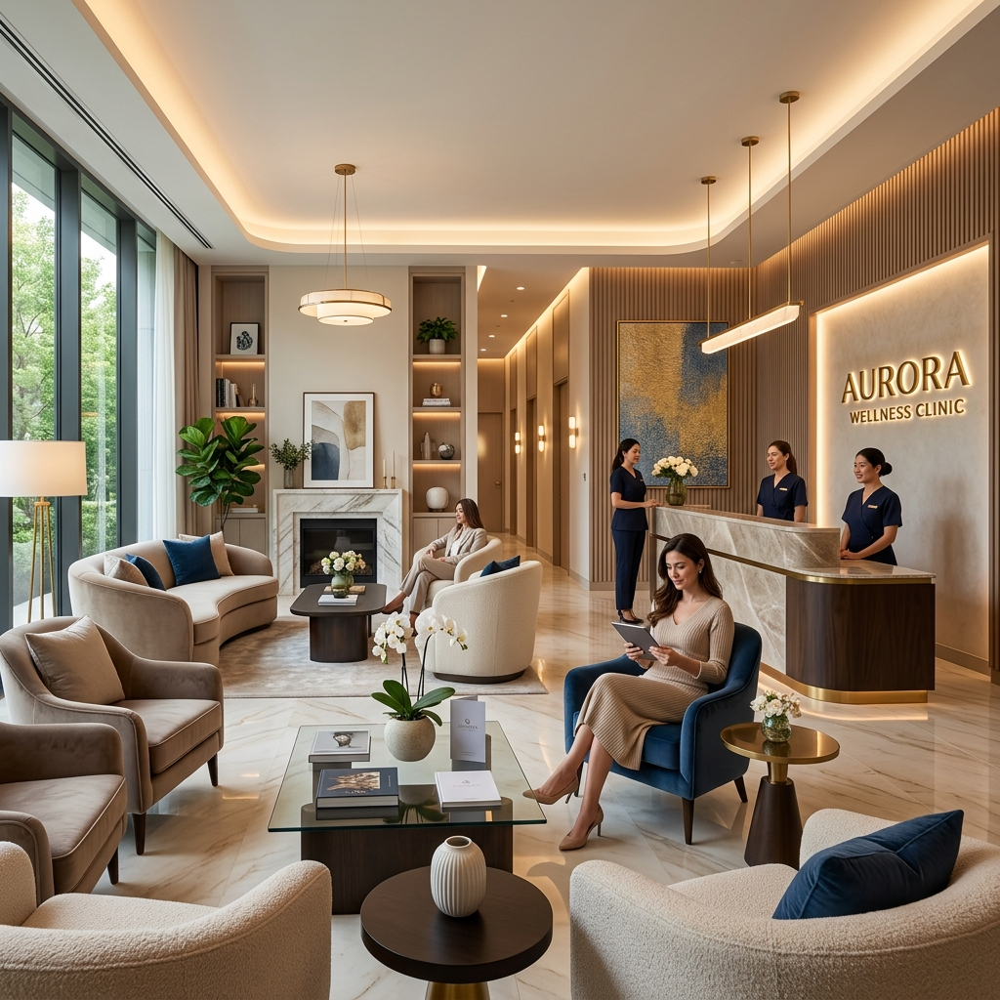
단순한 대기 공간을 넘어, 고급스러운 호텔식 라운지 감성을 더해 환자의 불안감을 해소하고 병원의 브랜드 가치를 높이는 인테리어 기법입니다.
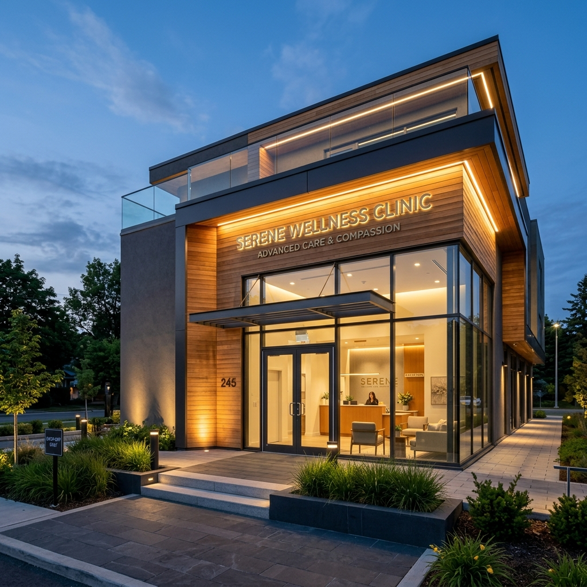
건물의 외부 전면과 입구 디자인을 통해 병원의 전문성과 신뢰감을 전달하고 브랜드 가치를 극대화하는 브랜딩 전략을 다룹니다.
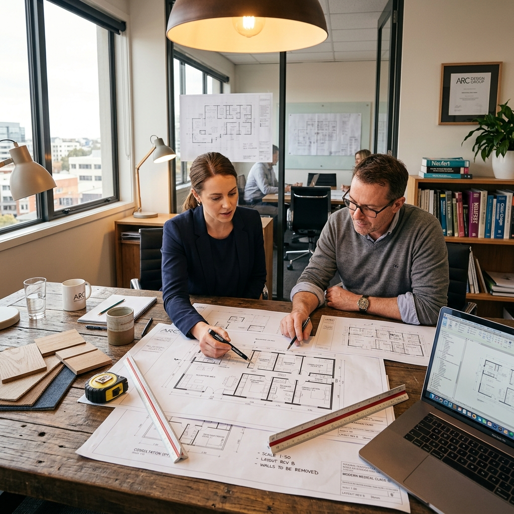
병원 공사는 1,500만 원 이상의 고액 시공이 대부분이므로, 법적으로 등록된 전문 면허 업체와 계약해야 법적 보호와 투명한 사후관리를 기대할 수 있습니다.
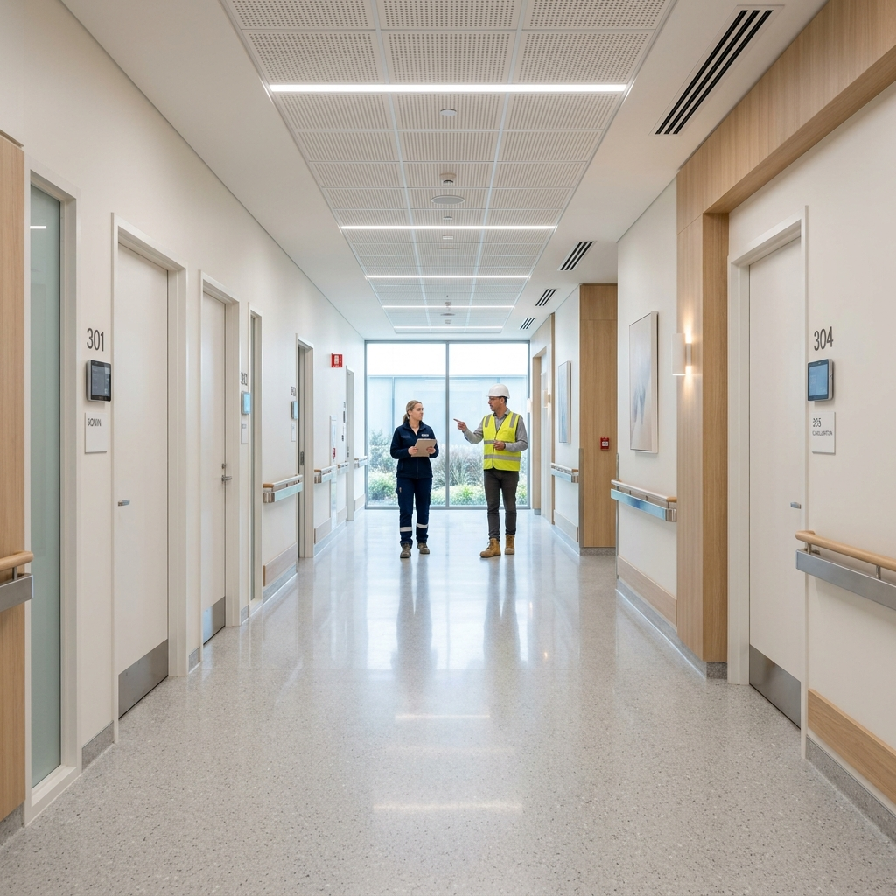
착공부터 준공, 그리고 개원 이후까지 단계별 품질 검증 및 하자보수 이행 보증을 통해 병원의 지속 가능성에 신뢰를 더하는 사후 관리 체계를 상세 설명합니다.
부산 지역 및 전국에서 창업을 준비하시는 대표님들이 반드시 실패를 예방하기 위해 읽어보셔야 할 업종별 전문 지식 아카이브입니다.
많은 창업자분들이 인테리어 업체를 선정할 때 "평당 얼마인가요?"라는 질문을 가장 먼저 던집니다. 하지만 상업공간 인테리어에서 평당 견적은 사실상 무의미에 가깝습니다.
주거공간과 달리 상가는 현재 현장의 철거 상태, 소방 설비 유무, 전기 승압 필요성, 그리고 수도 배수의 위치에 따라 동일한 20평이라도 천만 원 이상의 견적 차이가 발생할 수 있습니다. 특히 식당이나 카페의 경우 주방 방수 공사와 덕트(환기) 시설이 차지하는 비용 비중이 막대합니다. 따라서 단순히 평당 단가가 저렴한 업체를 고르기보다는, 현장 실측 후 '가설, 목공, 전기, 설비, 도장' 등 공정별로 상세하게 나뉜 산출 내역서를 제공하는 업체를 선택해야 추후 눈덩이처럼 불어나는 추가 요금 폭탄을 피할 수 있습니다.
아늑하고 예쁜 카페를 꿈꾸며 덜컥 상가 계약부터 하셨나요? 인테리어 공사 직전 가장 많이 겪는 낭패가 바로 '전기'와 '물' 문제입니다. 상가의 기본 계약 전력은 보통 5kW입니다.
하지만 에스프레소 머신 하나만 5~7kW의 전력을 잡아먹으며, 오븐, 제빙기, 냉난방기까지 동시에 가동하려면 최소 15kW~20kW 이상의 전력이 필요합니다. 기존 전력이 모자라면 한전에 승압을 신청해야 하며, 이 과정에서 1kW당 약 10~15만 원의 한전 불입금과 수십만 원의 내부 전기 배선 교체 비용이 발생합니다. 또한 주방이 들어설 자리에 배수구가 멀다면 바닥을 깨거나 단을 높이는 추가 설비 공사가 불가피합니다. 반드시 계약 전 건물주에게 현재 계약전력과 배관 위치를 확인하세요.
음식점 창업 시 눈에 보이는 홀 디자인보다 100배 더 중요한 것이 바로 '주방 방수'입니다. 홀 인테리어가 아무리 화려해도 주방에서 아래층으로 물이 새기 시작하면 그날로 영업 중단은 물론, 엄청난 손해배상까지 떠안아야 합니다.
완벽한 주방 방수를 위해서는 바닥 철거 후 이물질을 깨끗이 제거하고, 액체 방수와 우레탄 방수(또는 도막 방수)를 2~3회에 걸쳐 꼼꼼하게 시공해야 합니다. 방수액이 벽면을 타고 올라가는 '조인트' 부분의 처리가 핵심이며, 방수층이 완전히 마르기 전까지는 절대 다음 공정(타일 시공 등)으로 넘어가서는 안 됩니다. 공사 기간이 하루 이틀 늦어지더라도 방수 양생 시간을 철저히 지키는 양심적인 시공사를 만나는 것이 외식업 인테리어 성공의 핵심입니다.
학원이나 교습소를 창업할 때는 디자인보다 관할 교육청의 인허가 및 소방서의 완비 증명서 발급이 최우선입니다. 법적 기준을 맞추지 못한 인테리어는 전부 다 철거해야 하는 대참사를 부릅니다.
가장 중요한 것은 '방염' 처리입니다. 학원에 사용되는 벽지, 커튼, 블라인드, 실내 장식물(목재)은 반드시 방염 성적서가 있는 자재를 사용하거나, 현장에서 방염 도료를 칠한 뒤 관할 소방서의 방염 필증을 받아야 합니다. 또한, 학원법상 지역마다 '최소 강의실 면적' 규정이 다릅니다(예: 서울은 70㎡ 이상, 부산은 60㎡ 이상 등). 복도나 원장실을 제외한 순수 강의 공간의 내측 면적만 측정하므로, 인테리어 가벽을 세울 때 도면상 면적이 아닌 실제 내부 면적을 반드시 여유 있게 설계해야 합니다.
사무실 인테리어에서 가장 적은 비용으로 가장 큰 효과를 내는 요소는 단연 '조명(Lighting)'입니다. 과거처럼 사무실 전체를 차가운 흰색 형광등(주광색)으로만 도배하는 시대는 지났습니다.
장시간 모니터를 봐야 하는 개발자나 디자이너의 사무공간은 눈의 피로를 덜어주는 눈부심 방지(플리커 프리) 조명을 필수적으로 적용해야 합니다. 또한, 집중력이 필요한 개별 업무 공간은 4000K~5000K의 주백색 조명으로 세팅하고, 직원들이 휴식을 취하거나 자유로운 아이디어를 나누는 라운지 및 탕비실 공간은 카페처럼 아늑한 3000K 이하의 전구색 조명을 사용하는 '구역별 조명 온도 분리' 설계를 추천합니다. 빛의 색온도만 바꿔도 회사에 대한 직원들의 만족도가 크게 상승합니다.
헤어살롱이나 바버샵 등 미용업 인테리어의 심장부는 바로 '샴푸대'입니다. 미용실은 물과 전기를 가장 많이, 그리고 쉴 새 없이 사용하는 상업공간이므로 이에 특화된 설비 공사가 생명입니다.
먼저 온수기 용량입니다. 경대 3~4개 기준 샴푸대 1~2대를 쓴다면 최소 100~150리터 이상의 대용량 전기온수기가 필요합니다. 겨울철에 손님 머리를 감겨주다 찬물이 나오면 최악의 컴플레인으로 이어집니다. 둘째는 배관의 구배(기울기)와 사이즈입니다. 머리카락과 염색약이 매일 흘러가는 하수 배관은 일반 상가보다 훨씬 굵은 배관을 써야 하며, 물이 고이지 않고 시원하게 내려가도록 바닥 단을 넉넉히 높여 완벽한 물매를 잡아주는 것이 미용실 인테리어 업체의 진짜 실력입니다.
멋진 인테리어를 완성하는 것만큼이나 중요한 것이 나중에 상가를 비워줄 때의 '원상복구' 문제입니다. 많은 자영업자분들이 퇴점 시 임대인과의 철거 범위 다툼으로 수백만 원을 잃곤 합니다.
건물주와 상가 임대차 계약을 맺을 때 특약사항에 "원상복구의 범위는 임차인이 입주할 당시의 상태로 한다"라는 애매한 문구 대신, 입주 전 텅 빈 상가 상태를 동영상과 사진으로 꼼꼼히 촬영해 두고 "어디까지 부수고 나갈 것인지"를 명확히 적어야 합니다. 천장 텍스를 털어내고 노출 천장 인테리어를 했다면, 퇴점 시 다시 천장을 덮어놓고 나가야 하는지 계약 전 임대인과 미리 합의하고 문서화해 두는 것이 미래의 내 돈을 지키는 가장 확실한 실수 방지법입니다.
상업공간의 분위기를 가장 크게 결정하는 부분은 바로 바닥재의 재질 선택입니다. 에폭시, 데코타일, 포세린 타일 각각의 장단점을 명확히 알아야 합니다.
첫째, 빈티지한 감성의 에폭시는 일체형 구조라 이음새가 없고 물청소가 쉬우나 스크래치와 변색에 약합니다. 둘째, 가격이 가장 저렴하고 부분 보수가 쉬운 데코타일은 상가 임대차 매장에서 가장 흔히 쓰이지만 장시간 물이 고이면 틈새가 벌어지는 단점이 있습니다. 셋째, 최고급 프리미엄 룩을 선사하는 포세린 타일은 변형이 전혀 없고 열전도율이 우수해 겨울철 난방에 좋지만, 시공 단가가 비싸고 이음새 메디가 쉽게 오염될 수 있으므로 매장 특성에 맞춰 신중히 선택해야 합니다.
최고급 마감재 사용 및 감성적인 라운지 구성, 그리고 체계화된 조도 디자인의 결합입니다.
저희는 이탈리아산 천연 대리석, 오이코스 무독성 친환경 페인트 등 최상위 프리미엄 마감재만을 취급합니다. 또한 환자가 병원에 도달했을 때 느끼는 차갑고 불안한 심리를 낮추고자 아늑한 간접 광원 설계와 호텔 라운지급 대기실 조성을 조화시킴으로써 일반 시공업체와는 완전히 다른 차원의 브랜드 만족도와 치유 가치를 고객에게 선사합니다.
의료법상 법적 인허가 기준을 선제적으로 완벽하게 충족하며, 과목별 동선 분리와 전문 설비 설계를 최우선시해야 합니다.
보건소 개원 인허가 기준에 미달해 준공 검사가 거부되거나 수술실이 비법정 규격으로 완공될 시 대규모의 매몰 비용과 재공사가 수반됩니다. 당사는 내과/소아청소년과의 환자-의료진 감염 방지 동선, 치과의 체어 전용 복잡 설비 인프라, 엑스레이실 및 CT실의 납차폐 차단 설계 등 진료과목별 맞춤 특수 조건들을 사전 분석하여 안전하고 오차 없는 정밀 설계를 약속합니다.
공사 금액이 1,500만 원 이상일 시 반드시 국가 공인 건설업 면허인 '실내건축공사업 면허'가 등록되어 있는 건설 업체와 계약해야 법적으로 안전합니다.
건설산업기본법에 명시된 엄연한 법적 사항으로, 면허가 없는 무등록 불법 시공업체와 진행 시 다음과 같은 심각한 법적 및 물질적 손해를 온전히 입게 될 위험성이 높습니다: